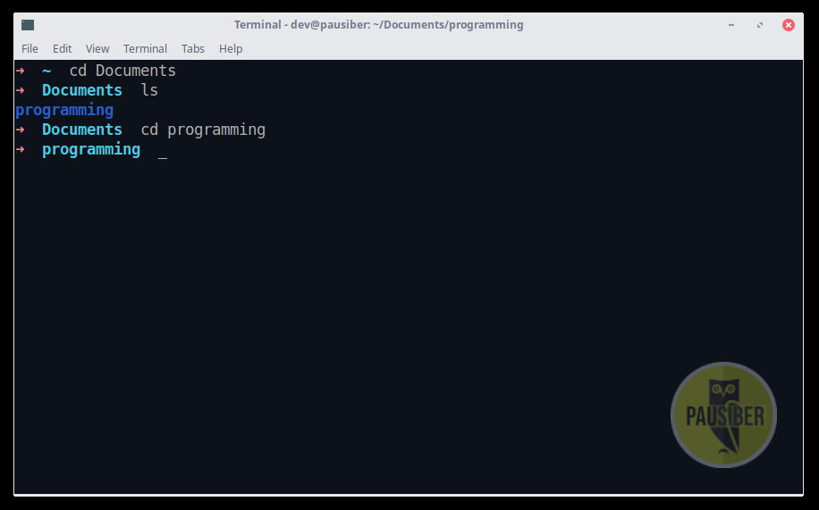
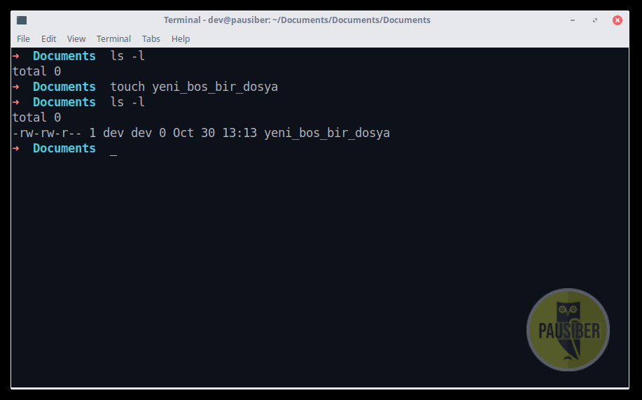
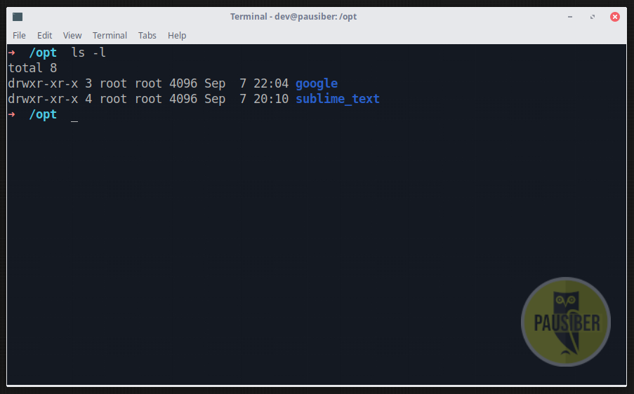

Hafta 1 - Temel Komutlar, Dosya sistem hiyerarşisi, Paket yöneticisi kavramı
Amaç : Terminal kullanımını kavratmak, dosya sistem hiyerarşisini kavratmak, paket yöneticisi kavramından bahsetmek
Terminal Nedir ?
Terminal, işletim sisteminizi shell ile kullanmanızı sağlayan bir arayüzdür. GNU/Linux dağıtımlarında SHELL olarak genellikle BASH kabuğu (shell) kullanılır.
Windows'ta bunun karşılığı CMD denebilir.
Windows'ta şuana kadar hiç CMD'ye girmeden hayatta kalabiliyorsanız, aslında GNU/Linux dağıtımlarının bir çoğunda da terminale hiç uğramadan da hayatta kalabilirsiniz..

Peki neden size terminal kullanımı anlatıyoruz ?
İşletim sistemine tamamen hakim olmak, isteklerinizi grafik arayüzünün hantallığına takılmadan yapmak ve işlerinizi çok daha hızlı görmek açısından terminal kullanımı önemlidir.
Ayrıca mesleğimiz gereği burada çok işimiz oluyor :).
Örneğin en basitinden, bir kaç hafta içersinde eğitimini alacağınız git kullanımının terminal üzerinden yapılması gibi. Onun dışında, yazdığınız herhangi bir programı derlerken terminal kullanmanız gerektiği gibi faktörler terminal kullanımına alışmanız açısından önemlidir.
Bu arada html/css derslerinde yazdığınız ya da yazcağınız uygulamaları bundan bir kaç hafta sonra hep birlikte, hiç bir şekilde grafik arayüzü (GUI) kullanmadan yalnızca terminali kullanarak; bir sunucu üzerinde ayağa kaldıracağız :).
Yani şuan öğreneceğiniz bilgiler başka anlamsız, hantal ve yavaş olarak gözükecek olsa bile aslında ilerki mesleki hayatınızda çokça rahat etmenizi sağlayacaktır.
Ne kadar erken öğrenmeniz sizin için o kadar iyi olacaktır.
SHELL Nedir ?
SHELL işletim sistemlerinin servislerini kullanmak amacıyla kullanılan bir kullanıcı arabirimidir (user interface), bir programdır.
Kabuk (shell) , çekirdek ile kullanıcı arasında ara görev görür.
Bir çok kabuk çeşidi vardır;
- sh
- bash
- zsh
- csh
- ksh
- tcsh
Önünüzde bulunan PauSiber Dev'de ise kabuk yani shell olarak ZSH kullanılmaktadır. Kabuk olarak BASH yerine ZSH kullanma sebebimiz; ZSH'ın BASH'e göre daha fazla özellik içermesi.
Bi de şekil filan yani .s.s.s


Temel Komutlar
Terminalda kullanabileceğiniz sayısız uygulama, sayısız komut var. Biz bu eğitim sırasında yalnızca temel düzeyde olan komutları göstereceğiz.
ls [list]
Herhangi bir dizinin içini görmek için kullandığımız komuttur.
Örneğin terminalde aşağıdaki gibi bir komut yürütürsek, o sırada bulunduğumuz dizinin içindeki tüm dosya dizinlerin çıktısı görürüz
ls

GNU/Linux'da bir dosyanın gizli olması için başına .
konması yeterlidir. Eğer bir dosyanın başında .
ifadesin var ise ls sorgularında gösterilmez.
Bu yüzden az önce yaptığımız sorgu gördüklerimiz bulunduğumuz satırdaki tüm dosya ya da dizinleri göstermedi.
Gizli dosya ve dizinler dahil tüm her şeyi görmek istiyor isek –all ya da -a parametresi kullanmamız gerekir.
Yani aşağıdaki gibi bir komut yürütürüz.
ls -a

Peki örneğin bulunduğumuz dizin altında bulunan tüm dosyaları tarihe ögre sıralı şekilde görüntülemek istersek ne yapmalıyız ? Aşağıdaki parametreleri kullanabiliriz.
ls -lat

man [manual]
EE tüm parametreleri böyle tek tek öğrenecek miyiz ? Evet.
Peki ezberleyecek miyiz ? HAYIR !
Kullanılan neredeyse her komutun bir manual sayfası vardır. Bunları okumak için man komutunu kullanabiliriz. Örneğin ls komutunun manual sayfasını okumak için man ls dememiz yeterlidir.
man ls
Son derece detaylı olan bu manual sayfalarında ilgili komutla ilgili tüm detaya ulaşabilirsiniz.
Not : manual sayfasından q‘a basarak çıkabilirsiniz.

Ayrıca ek bir öneri olarak; okuma kolaylığı sağlaması, aranan şeylere daha kolay ulaşma imkanı vermesi açısından, man kullanmak yerine tldr uygulamasını kullanabilirsiniz.
github.com/tldr-pages/tldr tl;dr : "too long; didn't read"

cd [change directory]
Bulunduğumuz dizini değiştirmek için cd komutunu kullanırız.
cd Documents/

Eğer bulunduğumuz dizinin bir üstüne gitmek istiyorsak aşağıdaki gibi yapmalıyız.
cd ..
pwd [print working directory]
Bu komut bize hangi dizinin içinde olduğumuzu söyler. Yani bulunduğumuz dizinin path'ini verir.
pwd

touch
İçi boş bir dosya oluşturmak amacıyla kullanılır.
touch yeni_bir_dosya

cat
Bir dosyanın içeriğini terminale basar.
cat beni_oku

tac
Bir dosyanın içeriğini, ters sırada, terminale basar.
tac beni_tersten_oku

echo
Terminal ekrine string bir ifadeyi basmak amacıyla kullanılabilir.
echo "MESAJ"

echo daha çok dosyaların içersine veri yazılırken kullanılır.
Örneğin aşağıdaki gibi bir ifade, file.txt dosyasının en son satırına yeni veri
string'ini ekler.
bash
echo "yeni veri" >> file.txt
Eğer hali hazırda bulunan dosyadaki tüm verileri silmek ver yerine yazmak istersek >> diyebiliriz.
echo "hepsini sil yerine yaz" > file.txt
less
Dosya içeriğini vim'e benzer bir şekilde görüntelememizi sağlayan bir programdır.
less dosya_adi

mkdir [make directory]
Dizin (klasör) oluşturmak amacıyla kullanılır. Aynı anda birden fazla klasör oluşturulabilir.
Hatta aynı anda iç içe klasörler de direkt olarak tek komutta oluşturulabilir.
mkdir klasor_adi

mv [move]
Dosya ya da dizinlerin taşınmasını sağlar.
Bu arada, GNU/Linux'da dosya ve dizin aynı şeydir, buna ileride değineceğiz.
mv pamuk_seker tatli_bisey/

cp [copy]
Dosya ya da dizinlerin kopyalanması sağlar.
cp dosya dosya.backup
-r
parametresi ise dizinlerin kopyalanması sağlanırken kullanılır.
cp -r sutlac/ tatli_bisey/

rm [remove]
Dosya ya da dizinlerin silinmesi amacıyla kullanılır.
rm dosya
rm -r dizin/
Örneğin aşağıdaki gibi tüm sistemi tek bir komut ile silebilirsiniz. Lakin bu komutun bir çok GNU/Linux dağıtımında çalıştırılması engellidir.
rm -rf /

wget
Wget; internet protokolleri üzerinden dosya indirme aracıdır.
wget https://raw.githubusercontent.com/PauSiber/gnulinux/master/hafta1/hafta1.md

!!
Son komutu tekrar yürütür.

histroy
Önceden yürütülen komutları listeli halde gösterir.
histroy
Daha düzenli şekilde görebilmek aşağıdaki gibi bir komut yürütebilirsiniz.
history | less

Bir Kaç Kısa Yol
ctrl + a ile terminalde yazılı olan ifadenin ilk başına gidilir.
ctrl + e ile terminalde yazılı olan ifadenin en sonuna gidilir.
ctrl + l ile terminal temizlenir.
ctrl + d ile terminalden çıkış sağlanır.
ctrl + shift + c ile kopyalama yapılır.
ctrl + shift + v ile yapıştırma yapılır.
ctrl + c ile çalışan uygulama durdurulabilir.
ctrl + z çalışan uygulama arkaya atılır.
ctrl + u o anda satıra yazılan herşeyi siler, temizler.
Terminal'de Çalışan Metin Editörleri
nano

vim

GNU/Linux'da Dosya Sistem Hiyerarşisi
UNIX tabanlı ya da esinlenilmiş işletim sistemlerinin dosya sistem hiyerarşisi Windows işletim sisteminden oldukça farklıdır.


GNU/Linux sistemlerde bir dosya dizin hiyerarşisi vardır. Vu hiyerarşinin en üstünde "/" yani root(kök) dizini bulunur. Bu, tüm sistemin referans noktasıdır.

/ [root(kök) dizini]
Tüm dizinlerin üzerinde bulunan dizindir. Tüm dizinler buradan dallanarak oluşturulur.
/bin
Sisteminin temel komutlarının bulunduğu dizindir.
Kullandığımız çoğu komut bu dizin altında bulunur. (cat, mkdir, cp, ls, mv, rm )
/etc
Sistemin bütün yapılandırma dosyaları bu dizin altında bulunur. Yapılandırma dosyası; bir programın işleyişini kontrol etmek için kullanılan yerel bir dosyadır.
/home
Kullanıcıların kayıtlı dosyalarını, kişisel ayarlarını vb. içeren ev dizinleridir. Windows'daki Documents and Settings'e benzetebiliriz. Her bir yeni kullanıcı için alt dizin olarak altına oluşturulur.
- /home
|-----> dev
|-----> hasantezcan
|-----> boratanrıkulu
/root
Root kullanıcısının home dizinidir. Diğer home dizinlerinden bi farkı yoktur.
/lib
Kernel modülleri ve paylaşılan kütüphane dosyaları bu klasörde bulunur. Var olan çekirdek modüllerini /lib/modules/[versiyon_numarası] içersinde bulabilirsiniz.
/var
Sistem değişkenlerini saklar. Home dizini kullanıcıların dosyalarını depolarken, /var dizini içinde de programların oluşturduğu veriler tutulur.
/opt
GNU/Linux dosya dizin hiyerarşisine uymayan programların kurulduğu dizindir. Henüz sizlere bahsetmediğimiz Bağamlılık
kavramına uymayan bu programlar sistemden yalıtılmış halde /opt dizini altından çalışmayı sürdür.

Not : GNU/Linux sistemlerde herzaman bir dizin içersinde bulunursunuz. Yani ağaç yapısının dışına çıkamazsınız.
Bir dosyanın yeri tarif ederken kullanıdiğimiz iki türlü yol vardır. Bunlar Tam Yol ve Göreceli Yol dur.
Tam Yol : Herzaman root dizininden başlar ve hedef gösterdiğimiz dizine kadar devam eder. Bu komutu hangi dizinde olursak olalım çalıştırdığımızda sonuç alırız. Çünkü bu tarif hiç bir zaman değişmez. Bunun nedeni de referans aldığı ilk yolun root olmasıdır.
Göreceli Yol : Bu tarifin herzaman geçerliliği yoktur. İçersinde bulununan dizine göre değişiklik gösterir.
Paket Yöneticisi Nedir ?
Hadi şimdi gidip Windows bir sistem deneme amaçlı bir uygulama kuralım. Örnek olması açısından firefox kurulumu yapalım.
Kurulum için ilk olarak browser açılmalı, ilgili site bulunmalı, ilgili exe dosyası sisteme indirilip, çalıştırılmalı ve ardından kurulum adımları uygulanmalıdır.
Ne kadar ilkelce değil mi ?
GNU/Linux dağıtımlarında böyle bir şey yok arkadaşlar. Paket yöneticisi diye bir kavram var. Paket yöneticisi ile tek bir komut ile istediğiniz uygulamayı kullandığınız dağıtımın repo'larından direkt olarak çekip kurabilirsiniz.
Paket yöneticisi yalnızca bir programdır ama dağıtımdan dağıtıma farklılık gösterir, her paket yöneticisi her dağıtımda kullanamazsınız.
Örneğin Debian'dan türemiş olan Ubuntu, APT isimli bir paket yöneticisi kullanır.
Yani Debian tabanlı dağıtımlarda APT paket yöneticisi kullanılır.
APT dışında, debian tabanlı olmayadan dağıtımlarda kullanılan, bir çok paket yöneticisi vardır.
- dnf(yum)
fedora - pacman
archlinux - portage
gentoo - zypper
opensuse
Hadi şimdi bir de PauSiber Dev üzerinde firefox kurulumu gerçekleştirelim. Bunun için aşağıdaki komutu yürütmemiz yeterlidir.
sudo apt install firefox

Şimdi bu komutu inceleyelim..

Burada sudo ifadesini kullanma sebebimiz işlemin sistem dosyaları üzerinde gerçekleşiyor olması. Bu yüzden komutun root yetkisi ile çalışması için komutun başına sudo ifadesini ekledik.
Gördüğünüz gibi kullanımı oldukça basit. APT paket yöneticisinin parametreleri ile ilgili bilgiye aşağıdaki tablodan erişebilirisiniz.
Tablo başlangıçta oldukça korkunç gözükecektir ama paket yöneticisi kullandıkça alışacağınızın garantisi veririz :) .
| APT | Açıklama |
|---|---|
apt search packageName |
paket arar |
apt install packageName |
paket yükler |
apt remove packageName |
paket siler |
| apt autoremove | herhangi bir pakete bağlı olmayan gereksiz paketleri siler |
| apt update | repo paket bilgilerini günceller |
| apt update && apt upgrade | yüklü paketleri günceller |
| apt update && apt dist-upgrade | sistemin tam güncellemesini yapar |
apt install –download-only packageName |
paketi yalnızca indirir (paket yöneticisi cache konumuna) |
| ls /var/cache/apt/archives/ | paket yöneticisi cache'ni görüntüler |
apt install /path/to/packageName.deb |
paketi dosya ile yükler |
| tail -f /var/log/dpkg.log | paket yöneticisi log'larını gösterir |
apt show packageName |
repo'daki bir paketin bilgisini gösterir |
dpkg -s packageName |
yüklü olan bir paketin bilgisini gösterir |
| dpkg -l \ | less -ya da- apt list –installed \ |
| apt list \ | less |
dpkg -L packageName |
yüklü olan paketin dosyalarının konumlarını gösterir |
| apt-cache policy | paket kaynak adreslerini listeler |
REPO Kavramı Nedir ?
Az önce paket yöneticisi ile birlikte uygulamaların nasıl kurulacağını öğrendik.
Peki bu paketler nereden geliyor.. İşte burada REPO kavramı ortaya çıkıyor. Her dağıtımın kendisine ait bir REPO'su vardır. PAket yöneticisi ile indirilip kurulan uygulamalar bu REPO'lardan gelir.
REPO adreslerini aşağıdaki gibi görüntüleyebiliriz. Ama lütfen bu dosyaları bir bilginiz yok ise değiştirmeyin.
vim /etc/apt/source.list
PauSiber Dev'de REPO olarak http://archive.ubuntu.com/ubuntu/ kullanılmaktadır.

REPO'da Olmayan Uygulamalar
REPO'larda yalnızca açık kaynak uygulamalar bulunabilir. Örneğin Google Chrome kapalı kaynak bir uygulamadır. Bu durumda ne yapacağız ?
Not : Chromium açık kaynak olduğu için REPO'larda mevcuttur.
Eğer REPO'larda bulunmayan bir uygulamaya kurulacak ise ilk yapılması gerek uygulamanın dağıtıcının sitesinden hangi şekilde edinilmesi gerektiğine bakmaktır. Çünkü bir çok farklı şekilde dağıtılıyor olabilir.
Örneğin Google Chrome için bir deb paketi indirmek gerekirken, Spotify kurulumu için REPO listemize ek bir kaynak adresi eklememiz gerekir.
Bu yüzden lütfen dışarıdan bir uygulama kuracaksınız, forumlara ya da youtube'a bakmak yerine, dağıtıcının sitesinden bakın. Orada kesinlikle bir bilgi olacaktır.


Bu hafta neler yaptık ?
- Terminalin ne olduğu ve neden kullanmamız gerektiğini öğrendik
- Temel komutlar ile terminal kullanıma ilk adımı attık.
- Terminal üzerinde kullanabileceğimiz yararlı kısayolları öğrendik.
- Terminal üzerinde çalışan metin editörlerini denedik.
- GNU/Linux’da dosya sistem hiyerarşisinin nasıl olduğunu temel düzeyde öğrendik.
- Paket Yöneticisi ve REPO kavramlarını öğrendik.